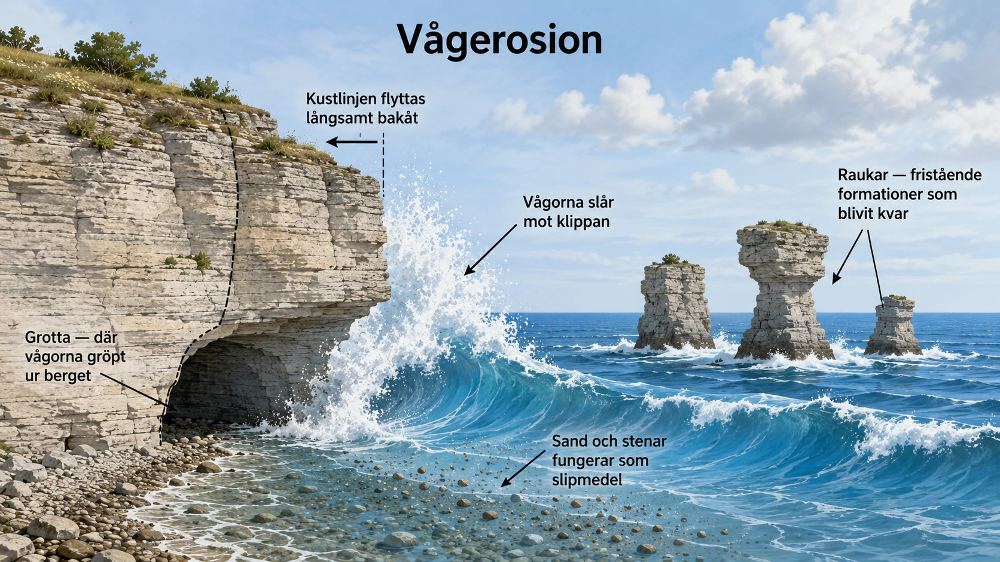
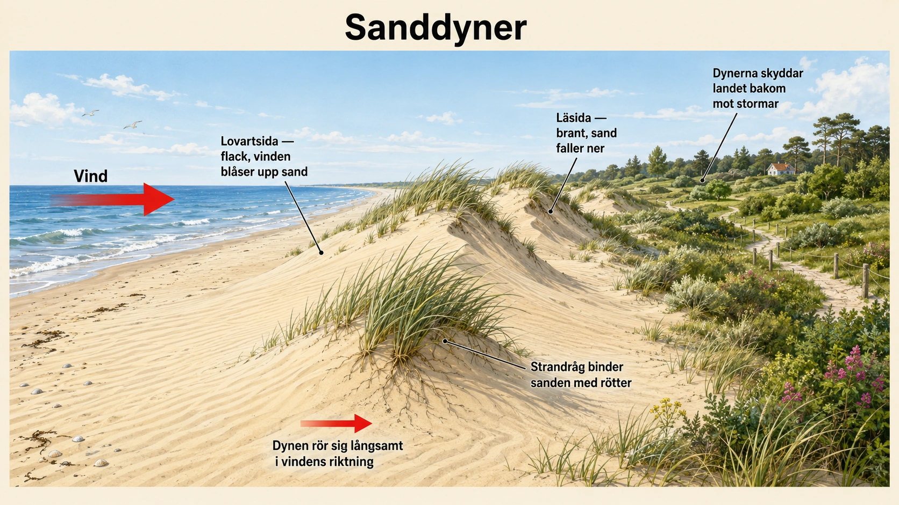
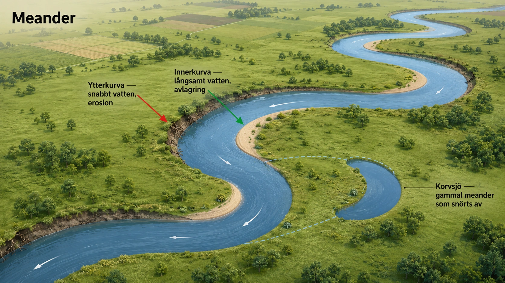

Erosion
— när material nöts loss, flyttas och formar landskap —
Vad är erosion?
I avsnitt 5 såg vi vittring — den process där berg och sten bryts ner där de står. Det är den första delen av de exogena processerna. Men nedbrytning är bara början. Nu kommer nästa steg: erosion, när det lösa materialet faktiskt flyttas till en ny plats.
Erosion betyder att material från jordytan nöts loss, transporteras bort och ofta hamnar på en ny plats. Det kan handla om sand, jord, grus, sten — och i större skala till och med berg — som flyttas av vatten, vind, vågor eller is. När materialet sedan läggs ner på en ny plats kallas det avlagring eller sedimentation.
Erosion och vittring hör tätt ihop. Vittring bryter sönder berget på plats. Erosion tar med sig det lösa materialet och flyttar det vidare. När frostvittring spräcker ett block från en fjällsida, kan blocket sedan transporteras vidare av rinnande vatten, en glaciär, vågor eller vind. Vittringen producerar materialet — erosionen flyttar det.
Fyra former av erosion
Det finns fyra viktiga former av erosion, som vi kommer titta på i tur och ordning i detta avsnitt:
- Vågerosion sker vid kuster när havets vågor nöter på klippor, stränder och strandbrinkar (denna underdel)
- Vinderosion sker när vinden lyfter och transporterar sand och jord (6B)
- Floderosion sker när rinnande vatten i bäckar, åar och floder gräver sig ner i marken och flyttar material (6C)
- Glaciärerosion sker när ismassor rör sig och slipar berggrunden (6D)
Var och en av dessa former har sin egen mekanism och skapar sina egna typiska landformer. Tillsammans formar de jordens yta i en pågående process som aldrig stannar.
Erosion som naturlig kraft och samhällsfråga
Erosion är en helt naturlig process. Det är så landskap formas, hur dalar gröps ur, hur stränder förändras och hur nytt land byggs upp av sediment. Utan erosion skulle jorden se helt annorlunda ut.
Men människan kan förstärka erosionen. Om skog huggs ner försvinner rötter som binder jorden. Om mark plöjs fel kan jorden blåsa eller spolas bort. Om stränder byggs sönder eller floder rätas ut kan erosionen öka kraftigt. Då kan jordbruksmark förstöras, hus hotas, vägar skadas och översvämningar bli värre. Erosion är därför både en naturlig kraft och en samhällsfråga — något vi kommer återkomma till genom hela avsnittet.
Vågerosion vid kuster
Vågerosion sker vid hav, sjöar och andra stora vattenytor där vågor slår mot land. När vågor träffar en kust för de med sig stor energi från vindarna som skapat dem. Den energin kan nöta på berg, slå loss stenar, flytta sand och gröpa ur strandbrinkar. Ju starkare vind och ju större vågor, desto kraftigare blir erosionen.
Vågerosion fungerar på flera sätt samtidigt. Vattnet slår mot berget med stor kraft — vid en storm kan tonvis med vatten kasta sig mot en klippa varje sekund. Sand, grus och stenar som finns i vattnet fungerar samtidigt som slipmedel. När vågorna kastar materialet mot klipporna nöts berget ner, ungefär som sandpapper mot trä. Vid branta klippkuster kan vågorna gröpa ur berget längst ner vid vattenytan — och till slut kan delar av klippan rasa ner i havet. På så sätt flyttas hela kustlinjen långsamt bakåt.

Stränder som förändras
Vid sandstränder beter sig vågerosionen annorlunda. Här finns det inget berg att slita på — istället flyttar vågorna sand fram och tillbaka. Under lugna sommarperioder kan vågorna gradvis bygga upp stranden, medan de under höststormar kan dra ut stora mängder sand igen.
Det betyder att sandstränder inte är stilla och fasta platser. De är levande landformer som förändras hela tiden. Den strand du går på i juli kan se annorlunda ut i november — och kanske helt försvunnen efter en kraftig vinterstorm. På Skånes kuster och vid Falsterbo i sydsverige är detta särskilt påtagligt, där sandtransporten längs kusten flyttar stora mängder material varje år.
Landformer som vågerosion skapar
Vågerosion formar naturen på spektakulära sätt. Beroende på berggrundens egenskaper och vågornas styrka kan den skapa:
- Branta kustklippor — när vågorna gröper ur berget vid foten och berget rasar ner
- Raukar — fristående stenformationer som blivit kvar när det omgivande berget vittrat bort. På Gotland är raukarna världsberömda
- Strandgrottor — när vågorna under lång tid har gröpt ur svaga partier i en klippa
- Strandvallar — där vågor under lugnare perioder lägger upp sand och grus
- Klapperstensfält — områden med rundade stenar som vågor slipat och sorterat
Många av Sveriges mest karakteristiska kustlandskap är resultatet av vågerosion under tusentals år. Gotlands kalkstensklippor och raukar, Bohusläns klippiga skärgård och Skånes flacka sandstränder är alla format av samma grundprincip — vågornas ständiga arbete mot land.
När vågerosion möter samhället
Vågerosion påverkar också människor direkt. Hus, vägar, hamnar och andra byggnader nära kusten kan hotas när stranden eller strandbrinken försvinner. I många kustsamhällen måste man bygga skydd som vågbrytare, stenskoningar eller artificiella strandvallar för att minska skadorna.
Men sådana skydd kan ibland flytta problemet vidare. När en kommun bygger en vågbrytare för att skydda sin strand, kan sanden som tidigare nådde grannkommunens strand istället fastna vid skyddet. Då börjar grannkommunens strand erodera. Kusten är ett sammanhängande system — något som görs på en plats påverkar ofta platser flera kilometer bort.
Klimat och framtid
Vågerosionen är inte en konstant kraft. Den blir starkare när havsnivån stiger och när stormar blir kraftigare — och båda dessa saker händer nu på grund av klimatförändringen. Låga kustområden riskerar då att förlora mark snabbare än någonsin tidigare i historisk tid.
För Sveriges del är detta särskilt aktuellt vid Skånes sydkust, där erosionen redan idag är ett växande problem. För människor som bor nära havet kan stigande havsnivåer betyda att tomter, odlingsmark och vägar hotas. Vågerosion är därför ett tydligt exempel på hur naturkrafter och samhällsbeslut möts — och på hur klimatförändringen gör en naturlig process till en stor utmaning.
I nästa underdel går vi vidare till vinderosionen — där det inte är vatten utan luft som flyttar material över landskapet.
Vad är erosion?
- Erosion = material nöts loss och flyttas till en ny plats
- Materialet kan vara sand, jord, grus, sten eller berg
- Det flyttas av vatten, vind, vågor eller is
- När materialet läggs ner kallas det avlagring
I förra avsnittet såg vi vittring — berg som bryts ner där de står. Nu kommer nästa steg: erosion. Erosion betyder att material nöts loss, transporteras bort och hamnar på en ny plats.
Vittring och erosion hör ihop. Vittring bryter sönder berget på plats. Erosion flyttar det lösa materialet vidare.
Fyra former av erosion
- Vågerosion — havet mot kusten (6A — denna)
- Vinderosion — vinden flyttar sand och jord (6B)
- Floderosion — rinnande vatten i floder (6C)
- Glaciärerosion — isen slipar berget (6D)
Det finns fyra viktiga former av erosion. Vågerosion sker vid kuster. Vinderosion sker där vinden kan blåsa fritt. Floderosion sker i bäckar och floder. Glaciärerosion sker där det finns is.
Vågerosion vid kusten
- Vågor slår mot kusten med stor kraft
- Sand och stenar i vattnet fungerar som slipmedel
- Berget nöts ner som med sandpapper
- Vid branta klippor kan delar rasa ner i havet
- Kustlinjen flyttas långsamt bakåt
Vågerosion sker vid hav och sjöar där vågor slår mot land. När vågorna träffar kusten för de med sig stor energi. Den energin kan nöta på berg, slå loss stenar, flytta sand och gröpa ur strandbrinkar.
Vågerosion fungerar på två sätt samtidigt. Vattnet slår mot berget med kraft. Och sand och stenar i vattnet fungerar som slipmedel, ungefär som sandpapper. Vid branta klippkuster kan vågorna gröpa ur berget längst ner — och till slut rasar delar av klippan ner. Kustlinjen flyttas långsamt bakåt.
Lägg märke till:
- Vågorna slår med kraft mot klippan
- Vattnet är fyllt av sand och små stenar som slipar berget
- Vid klippans fot finns en grotta som vågorna gröpt ur
- Längre ut i havet står raukar — formationer som blivit kvar
Fundera: Varför är just kustområden så ofta dramatiska och vackra?
Stränder som förändras
- Vid sandstränder flyttar vågor sand fram och tillbaka
- Under lugna perioder kan stranden byggas upp
- Under stormar kan samma strand eroderas bort
- Stränder är levande landformer — de förändras hela tiden
Vid sandstränder finns det inget berg att slita på. Istället flyttar vågorna sand fram och tillbaka. Under lugna perioder kan sanden byggas upp till en strand. Under stormar kan samma strand eroderas bort.
Det betyder att stränder inte är stilla platser. De förändras hela tiden. En strand kan se annorlunda ut från en månad till en annan.
Landformer som vågerosion skapar
- Kustklippor — branta klippor där vågor gröpt ur berget
- Raukar — fristående stenformationer (vanliga på Gotland)
- Grottor — gröps ur svaga partier i klippan
- Strandvallar — där sand och grus läggs upp
- Klapperstensfält — slipade, rundade stenar
Vågerosion formar naturen på spektakulära sätt. Branta klippor uppstår när vågorna gröper ur berget vid foten. Raukar är fristående stenformationer som blivit kvar när berget runt omkring vittrat bort — Gotland är världsberömt för sina raukar. Strandgrottor uppstår där vågor gröpt ur svaga partier. Klapperstensfält är områden med rundade stenar som vågor slipat.
När vågerosion möter samhället
- Hus, vägar och hamnar nära kusten kan hotas
- Människor bygger vågbrytare och stenskoningar
- Skydd på ett ställe kan flytta problemet vidare till nästa kustområde
- Klimatförändring och stigande hav gör erosionen värre
Vågerosion påverkar människor. Hus och vägar nära kusten kan hotas när stranden försvinner. I många kustsamhällen bygger man vågbrytare och andra skydd. Men ett skydd på ett ställe kan flytta problemet till nästa strand.
När havsnivån stiger och stormar blir kraftigare blir vågerosionen ett större problem. Detta händer nu på grund av klimatförändringen. För Sveriges del är Skånes sydkust särskilt drabbad.
Sammanfattning
- Erosion = material nöts loss, flyttas, läggs ner
- Vågerosion = vågor mot kust
- Vatten + slipmedel = klippan nöts ner
- Stränder är levande och förändras
- Klimatförändring gör vågerosionen värre
Erosion är när material nöts loss och flyttas till en ny plats. Vågerosion är när havets vågor nöter mot kusten. Det formar landskapet på dramatiska sätt — branta klippor, raukar, grottor och stränder.
I nästa underdel går vi vidare till vinderosion — där det är luften, inte vattnet, som flyttar material.
Gotlands raukar — när kalksten möter vågor
På Gotlands kuster reser sig några av Sveriges mest spektakulära landformer — raukarna. De är fristående stenpelare som står som vakter längs strandlinjen, ibland flera meter höga, med former som påminner om människor, djur eller mytiska väsen. Folk har gett dem namn — Jungfrun, Hoburgsgubben, Pojkarna. För besökare är de en pittoresk märkvärdighet. För geologer är de en konkret berättelse om vad vågerosion kan göra.
För att förstå raukarna behöver vi knyta ihop två saker vi sett tidigare i kapitlet. Från avsnitt 5 vet vi att Gotlands berggrund är kalksten — bildad i ett forntida hav för 420 miljoner år sedan. Kalksten är inte enhetlig — olika delar av den har olika hårdhet, beroende på vilka organismer som byggde upp den och vilka processer som format den sedan. Vissa partier är mjukare, andra hårdare.
När havets vågor under tusentals år arbetat mot Gotlands kuster har de slipat ner de mjukare partierna snabbare än de hårdare. Där berget var mer löst eller mer porigt har vågerosionen vunnit. Där det fanns hårda kärnor — kanske gamla revstrukturer eller särskilt täta kalkstensblock — har berget stått emot. Resultatet är en kustlinje där det hårdaste står kvar medan det mjukaste försvunnit.
Raukarna är just dessa hårda kärnor. De är vad som blivit kvar när allt runt omkring nötts bort. Varje rauk är ett bevis på två saker samtidigt: vågerosionens kraft (eftersom så mycket berg har försvunnit), och bergets oregelbundenhet (eftersom raukarna kunde stå emot där andra delar gav upp). De är negativa skulpturer — formade inte av vad som lagts till, utan av vad som tagits bort.
Många av Gotlands raukar är också geologiska tidsmaskiner. De innehåller fossiler — koraller, musslor, brachiopoder — från det forntida hav där kalkstenen en gång bildades. Att stå vid en rauk är att samtidigt se två olika hav: det moderna Östersjön som nu sliter bort berget, och det forntida tropiska havet som en gång byggde det. Två kustlinjer, åtskilda av 420 miljoner år, möts vid samma stenpelare.
Raukarna är också skyddade som naturminnen och inom Gotlands naturreservat. Det är inte bara av estetiska skäl — det är också för att de är delar av en sällsynt geologisk uppvisning. På få andra ställen i världen kan man se vågerosionens arbete på ett så koncentrerat och dramatiskt sätt. De är en del av öns identitet, en del av geologins läroböcker, och en del av en process som fortfarande pågår — varje storm fortsätter att forma och nöta dem ytterligare.
När havet kommer närmare — kusterosion och klimatförändring
Vågerosionen har funnits så länge det funnits hav och stränder. Men under det senaste århundradet har något hänt som förändrar hur snabbt och hur dramatiskt den arbetar. Klimatförändringen har gjort vågerosionen till en av samhällets mest akuta naturgeografiska utmaningar.
Två förändringar driver detta. För det första stiger havsnivån globalt. När jordens medeltemperatur ökar smälter glaciärer och inlandsisar på land, och vattnet rinner ner i haven. Samtidigt utvidgas själva havsvattnet något när det blir varmare (varmt vatten tar mer plats än kallt). Båda effekterna tillsammans gör att haven nu stiger med ungefär 3-4 millimeter per år — och takten ökar.
För det andra blir stormar kraftigare. Varmare hav ger mer energi till lågtryck och cyklon-system. Det betyder att de vågor som slår mot kusterna under stormar är högre, kraftigare och kan slå längre in på land än förr. Vid en kombination av högt vatten och kraftiga vågor — som vid en stormflod — kan kuster erodera mer på några timmar än under flera år av normalväder.
För Sveriges del är detta särskilt tydligt vid Skånes sydkust. Områden som Ystadkusten och kring Skanör-Falsterbo har eroderat dramatiskt under de senaste decennierna. Sommarstugor som låg 30 meter från havet på 1980-talet ligger idag bara några meter från strandkanten, eller har rivits eftersom marken under dem försvunnit. Vågbrytare och stenskoningar har byggts i många områden, men problemen flyttas ofta bara vidare till nästa strandsträcka.
Globalt är situationen ännu allvarligare. Låga öar i Stilla havet — som Tuvalu, Kiribati och delar av Maldiverna — riskerar att hela existera bortskuras av havet under detta århundrade. Bangladesh, med över 160 miljoner invånare, har stora delar av sitt land bara några meter över havsnivån. För dessa länder är vågerosion och stigande hav inte en framtidsfråga — det är en pågående katastrof.
Detta är ett av geografins tydligaste exempel på hur natur och samhälle möts. Vågerosionen själv är samma kraft som format Gotlands raukar i tusentals år. Men nu möter den ett klimatsystem i förändring, och en värld där miljardvis människor bor nära kuster. När havet stiger en centimeter är det inte mycket geologiskt. När det stiger en meter under detta århundrade — vilket är inom intervallet för seriösa klimatprognoser — är det en katastrof för hundratals miljoner människor.
Vågerosion är inte en abstrakt naturkraft. Den är högst konkret, högst pågående, och högst aktuell. Att lära sig hur den fungerar är inte bara geografi för dess egen skull. Det är geografi för att förstå framtiden.
När vinden lyfter jordens yta
Vinderosion sker när luften — inte vattnet — flyttar material från markytan. Vinden kan lyfta, rulla eller blåsa bort små partiklar: sand, silt, torr jord, damm. Det är samma princip som du själv har sett om du varit ute en blåsig dag och sett sand virvla över en strand eller damm yra över en torr åker. Multiplicera det med kraftiga vindar, stora ytor och tusentals år, så får du vinderosion som geografisk kraft.
Vinderosionen är vanligast i fyra typer av miljöer:
- Öknar — där det knappast finns vegetation som binder marken
- Sandstränder — där det finns löst material och ofta hård vind
- Torra jordbruksmarker — särskilt i områden med långa torra perioder
- Områden där vegetation har förstörts — av människan eller av naturkatastrofer
I alla dessa fall har vinden tre saker den behöver: löst material att flytta, frånvaro av växtlighet som binder, och tillräcklig kraft. När alla tre finns kan vinden flytta enorma mängder material — och förändra både landskap och samhällen.
Hur vinden transporterar material
Vinden flyttar inte allt material på samma sätt. Beroende på storleken på partiklarna används tre olika transport-metoder:
De allra minsta partiklarna — silt och damm — lyfts högt upp i luften och kan färdas tusentals kilometer. Saharasanden som ibland färgar bilarna i Sverige eller Spanien har transporterats just så. Detta kallas suspension — partiklarna hänger i luften som rök.
Sandkorn är för tunga för att lyftas upp, men för lätta för att stanna stilla i kraftig vind. De studsar fram nära markytan, ofta i hopp på 10-50 centimeter åt gången. Det kallas saltation, från latinets ord för "hopp". Detta är hur de flesta sanddyner byggs upp.
Grövre material — större sandkorn eller småsten — är för tungt för att hoppa, men kan rullas eller knuffas längs marken av kraftig vind. Det kallas krypning. Det går långsamt, men över lång tid kan även stora ytor förflyttas.
När sandkorn studsar mot stenar och berg kan de slipa ytan — på samma sätt som vågornas sand sliper kustklippor. Under lång tid kan vinden därför också forma berg och stenar, även om processen är långsammare än vid kuster eller floder.
Sanddyner — landskap som rör sig
Det mest klassiska resultatet av vinderosion är sanddyner. En sanddyn bildas när vinden transporterar sand och sanden samlas på en plats där vindens hastighet minskar. Det kan vara bakom en växt, en sten eller en annan hinder. När sanden börjar samlas, fungerar högen själv som ett hinder för mer vind — och fler sandkorn samlas där. Dyn växer.
Men sanddyner är inte stilla. De rör sig. Vinden blåser sand uppför dynens lovartsida (där vinden kommer ifrån), över krönet, och lägger den på läsidan (den vindskyddade sidan). På så sätt rör sig hela dynen långsamt i vindens riktning. I öknar kan en sanddyn vandra flera meter per år — vilket märks tydligt om en väg eller en by hamnar i dess väg.
I Sverige finns sanddyner framför allt vid våra sandstränder — Skånes sydkust, Halland och delar av Gotland har klassiska dyn-landskap. Falsterbohalvön är ett av Sveriges mest kända dyn-områden.

Varför ska man vara rädd om sanddynerna?
Sanddyner ser ut som vacker natur, men de spelar en mycket viktig praktisk roll för områdena bakom dem. Sanddyner fungerar som naturliga vågbrytare — de bromsar vinden, binder sanden, och skyddar landet bakom mot stormvågor och högt vatten. Utan sanddynerna skulle stränderna och samhällena bakom vara mycket mer sårbara för stormar.
Det är därför det är viktigt att man inte trampar sönder vegetationen på sanddyner. Växter som strandråg och andra dyngräs har djupa rötter som binder sanden. Om människor cyklar i dynerna, gör stigar genom dem eller låter djur beta för hårt, kan vegetationen försvinna. Då börjar sanden blåsa bort, och dynen försvagas. Området bakom blir mer sårbart för stormar.
Det är därför många svenska sandstrand-områden har skyltar som ber besökare att hålla sig till markerade stigar och inte gå rakt över dynerna. Det är inte bara skydd för "naturens skull" — det är ett konkret skydd för vägar, hus och människor som bor bakom dynerna.
Vinderosion och jordbruket
För jordbruket kan vinderosion vara ett stort problem. Den finaste och mest näringsrika jorden — det så kallade matjorden — finns ofta överst i marken. Om den blåser bort förlorar marken sin bördighet. Då blir det svårare att odla, skördarna minskar, och bonden måste använda mer gödsel för att kompensera. På sikt kan marken bli helt obrukbar.
I torra områden kan kraftig vinderosion bidra till ökenspridning — att områden som tidigare var brukbara förvandlas till öken. Detta är ett växande problem i Sahel-bältet söder om Sahara, och i flera områden i Centralasien och Mellanöstern. Människor som odlat samma mark i generationer kan plötsligt upptäcka att jorden inte längre räcker till för att föda familjen. Det driver också migration — människor flyttar till städerna när jordbruket inte längre fungerar.
Vinderosionen är inte bara naturkraft
Vinderosion är, precis som vågerosionen, en naturlig process — men en som människan kan förstärka eller försvaga. Människor kan förstärka vinderosionen genom att ta bort vegetation, överbeta marken med för många djur, plöja sönder torra jordar, eller lämna åkrar öppna utan skydd. Allt detta tar bort det som binder jorden, och vinden får fritt spelrum.
Människor kan också minska vinderosionen genom medvetna åtgärder: plantera trädridåer som vindskydd, hålla marken täckt med växter året om, plöja vinkelrätt mot vinden, eller skydda sanddyner från slitage. I många länder är det numera ett vanligt sätt att tänka kring jordbruk — att samarbeta med naturen istället för att lämna marken sårbar för vinden.
Vinderosion handlar därför både om naturkrafter och om hur vi använder marken. Det är en av de tydligaste platserna där människans beslut direkt påverkar hur fort jordens yta förändras. I nästa underdel går vi vidare till floderosion — där rinnande vatten tar över rollen som transportör.
När vinden lyfter jordens yta
- Vinderosion = vinden flyttar sand och jord
- Vanligast i öknar, stränder och torra jordar
- Behöver: löst material + inga växter + tillräcklig vind
Vinderosion sker när luften — inte vattnet — flyttar material från markytan. Vinden kan lyfta sand, silt eller torr jord och föra den till en ny plats.
Vinderosion är vanligast där det är torrt, där det finns lite växter och där vinden kan blåsa fritt över stora ytor. Öknar, sandstränder och torra jordbruksmarker är typiska platser.
Hur vinden flyttar material
- Damm lyfts högt upp och kan färdas långt
- Sand studsar fram nära marken
- Grövre material rullas eller knuffas
- Sandkorn slipar berg när de blåser mot dem
Vinden flyttar olika storlekar av material på olika sätt. De allra minsta partiklarna lyfts högt upp och kan färdas långa avstånd som damm. Sandkorn studsar fram nära markytan i små hopp. Grövre material rullas eller knuffas längs marken.
När sandkorn blåser mot stenar och berg kan de slipa ytan. Under lång tid kan vinden därför också forma berg och stenar.
Sanddyner
- En sanddyn bildas där vinden tappar fart
- Sand samlas bakom hinder — växter, stenar
- Dyner rör sig långsamt i vindens riktning
- I Sverige finns sanddyner vid stränder — Falsterbo, Skåne, Halland
Det mest klassiska resultatet av vinderosion är sanddyner. En sanddyn bildas när vinden transporterar sand och sanden samlas där vindens hastighet minskar — till exempel bakom växter eller stenar.
Sanddyner rör sig långsamt. Vinden blåser sand uppför ena sidan, över krönet, och ner på den andra sidan. På så sätt vandrar hela dynen i vindens riktning. I Sverige finns klassiska dyn-områden vid Falsterbo och längs Skånes sydkust.
Lägg märke till:
- Dynen har asymmetrisk form — flack på ena sidan, brant på den andra
- Pilen visar vindriktningen
- Strandråg och annat gräs binder sanden med rötter
- Bakom dynerna finns vegetation som dynerna skyddar
Fundera: Varför är dynen brantare på läsidan?
Varför ska man vara rädd om sanddynerna?
- Sanddyner är naturliga skydd mot stormar
- Växter med rötter binder sanden
- Om vegetation trampas sönder kan dynen blåsa bort
- Då blir stränder och samhällen sårbara
Sanddyner spelar en viktig praktisk roll. De fungerar som naturliga vågbrytare — de bromsar vinden, binder sanden och skyddar landet bakom mot stormar.
Växter som strandråg har djupa rötter som binder sanden. Om människor trampar sönder vegetationen, cyklar i dynerna eller gör stigar genom dem, kan sanden börja blåsa bort. Då blir området bakom mer sårbart för stormar. Det är därför man ska hålla sig till markerade stigar vid sandstränder.
Vinderosion och jordbruket
- Den näringsrikaste jorden finns överst
- Om matjorden blåser bort förlorar marken bördighet
- Svårare att odla, sämre skördar
- I torra områden kan det bli ökenspridning
Vinderosion kan vara ett stort problem för jordbruket. Den finaste och mest näringsrika jorden — matjorden — finns ofta överst i marken. Om den blåser bort förlorar marken sin bördighet. Då blir det svårare att odla.
I torra områden kan kraftig vinderosion bidra till ökenspridning — områden som tidigare var brukbara förvandlas till öken. Det är ett växande problem i Sahel-bältet söder om Sahara.
Människan förstärker eller försvagar vinderosionen
- Människor kan förstärka erosionen: ta bort vegetation, plöja torr jord
- Människor kan minska erosionen: plantera vindskydd, behålla växter på marken
- Det är ett val varje samhälle gör
Människor kan göra vinderosionen värre — genom att ta bort vegetation, plöja torra jordar, eller lämna åkrar öppna. Men människor kan också minska den — genom att plantera trädridåer som vindskydd, hålla marken täckt av växter, och skydda sanddyner från slitage.
Vinderosion handlar därför både om naturkrafter och om hur vi använder marken. I nästa underdel går vi vidare till floderosion.
The Dust Bowl — när jordbruket dödade sin egen jord
I 1930-talets USA inträffade en av historiens värsta miljökatastrofer. På de stora prärierna i Oklahoma, Texas, Kansas och delarna runt omkring blåste den näringsrika ytjorden bort i moln så stora att de mörklade himlen mitt på dagen. Människor fick stänga fönster och tejpa dem för att inte få stoftet i lungorna. Tåg stannade. Skolor stängde. Boskap dog. Och hundratusentals människor — det som John Steinbeck senare skrev om i "Vredens druvor" — packade sina ägodelar och flydde västerut. Området kallades The Dust Bowl, dammskålen.
Men det märkliga är att Dust Bowl inte var en helt naturlig katastrof. Den var till stor del människans verk — och en av historiens tydligaste exempel på hur fel användning av jorden kan släppa loss vinderosionen.
Under sent 1800-tal hade de stora prärierna i mellersta USA varit gräslandskap. Naturligt växte där buffel-gräs och annat tåligt gräs med djupa rötter som höll fast jorden, även under torra perioder. Inhemska bisonherder betade kort under sina vandringar, men prärien återhämtade sig. Marken klarade torka eftersom rötterna höll allt på plats.
När europeiska settlers kom västerut började de plöja upp prärien för vetehjordbruk. Det fungerade bra i några decennier, särskilt under 1910- och 1920-talen som var ovanligt regniga. Vetet växte fantastiskt, och bönder plöjde upp mer och mer mark. Den naturliga prärien minskade dramatiskt. Det djupa rotsystemet som binder marken försvann och ersattes med vetes ytligare rötter, som bara grep tag i de översta centimetrarna av jorden.
Sedan kom 1930-talet. Klimatet svängde — torra år följde varandra. Veteskördarna slog fel. Många bönder gick i konkurs och övergav sina åkrar. Marken låg bar, utan vegetation. Och då började vindarna arbeta.
Den 14 april 1935 — som senare blev känd som "Svarta söndagen" — drog en gigantisk dammstorm över prärierna. Det var som en mörk vägg av jord som rörde sig framåt, tusentals meter hög. Vid Texas-gränsen hade dagsljus försvunnit innan klockan tre på eftermiddagen. Människor som befann sig ute kunde inte se sina egna händer framför ansiktet. Hus täcktes av jord upp till taken. Det berättades att det jord som blåste från Oklahoma föll som svart "snö" i Boston, 2 500 kilometer bort. Andra delar nådde fartyg ute i Atlanten.
Konsekvenserna var enorma. Cirka 2,5 miljoner människor flydde från Dust Bowl-området under 1930-talet — en av historiens största inrikes migrationer i USA. Hundratals dog av "dammlunginflammation" — sjukdomar orsakade av att andas in jord. Hela samhällen försvann.
Det som följde är en historisk lektion. Den amerikanska regeringen, under president Roosevelt, satte upp en hel myndighet för att hantera problemet — Soil Conservation Service. Den lärde bönder att plantera trädridåer som vindskydd. Att plöja parallellt med konturer istället för rakt fram. Att roterar grödor istället för att odla samma sak år efter år. Att hålla jorden täckt med växter under vintern. Många av de jordbruksmetoder som idag används globalt har sitt ursprung i lärdomarna från Dust Bowl.
Dust Bowl är därför inte bara en historisk katastrof. Den är en lärobok i hur människan både kan släppa loss och tämja vinderosion. Den visar att jorden under våra fötter inte är obegränsad — att den kan försvinna, bokstavligen, om vi inte tar hand om den. Och den visar att kunskap och medvetna val kan vända även de värsta misstag.
Ökenspridning i Sahel — när vinderosion driver migration idag
Söder om Sahara, i ett brett bälte som sträcker sig från Senegal i väster till Sudan i öster, ligger Sahel — ett semi-arid område där 100 miljoner människor lever på marker som blir alltmer torra och alltmer sårbara för vinderosion. Sahel är där den moderna versionen av Dust Bowl pågår — fast tystare, långsammare, och med mycket fattigare människor som drabbade.
Klimatet i Sahel har alltid varit utmanande — varmt, med regn bara några månader per år. Människor som levt där har länge anpassat sig: nomadiska herdar har flyttat sina djur efter regnen, jordbrukare har odlat tåliga grödor som hirs och sorghum. Men under det senaste halvseklet har balansen brutits.
Befolkningen i Sahel har vuxit snabbt — i många länder har den fördubblats sedan 1980. Mer människor betyder mer behov av mat. Det betyder mer mark som plöjs upp, mer skog som huggs ner för bränsleved, mer djur som betar samma marker. Samtidigt har klimatet blivit instabilare — vissa år ger mer regn, men flera år har varit torrare än normalt. Och när jorden ligger bar och torr, är den ett enkelt byte för Sahara-vindarna.
Resultatet är en process som kallas ökenspridning (eller "desertifikation"). Mark som tidigare gav skördar förvandlas till öken — sand och damm där det förr fanns jord. Träd och buskar dör. Brunnar torkar ut. Bönder ger upp sina åkrar och flyttar till städer som inte har plats för dem. Det skapar arbetslöshet, fattigdom och social oro. I många fall har det också drivit människor att fly över Medelhavet mot Europa — en del av den migration som diskuteras intensivt i europeisk politik har sina rötter just här.
Men det finns hopp. I många länder pågår nu storskaliga insatser för att vända processen. Great Green Wall, "Stora gröna muren", är ett afrikanskt projekt som syftar till att plantera en kontinent-spännande korridor av träd från Atlanten till Röda havet — 8 000 kilometer lång — som ska bromsa ökenspridningen. Lokalt har bönder i många byar lärt sig metoder som binder jorden bättre: att plantera träd tillsammans med grödor, att inte plöja djupt, att låta naturlig vegetation komma tillbaka i delar av området.
Resultaten är blandade. På vissa platser har den gröna muren börjat bromsa öknen. På andra fortsätter ökenspridningen oförändrad. Det är inte en strid med ett enkelt slut.
Men Sahel visar något viktigt om vinderosionen som geografiska kraft. Den är inte abstrakt. Den drabbar konkreta människor, förändrar samhällen, och driver politiska processer. Den är också nära förbunden med ekonomi, klimat, befolkningstillväxt och teknik. För att förstå Sahel är det inte nog att förstå vind och sand. Man måste också förstå hur människor bor, hur de odlar, hur klimatet förändras, och vilka val olika samhällen gör om hur de använder sitt land. Vinderosion är därför inte bara geografi. Det är politik, ekonomi och människors liv — som alltid när naturkrafter möter mänskliga samhällen.
När rinnande vatten formar landskap
Vi har sett hur vågor och vind kan flytta material. Nu går vi vidare till en av jordens mest dramatiska erosionsprocesser — när rinnande vatten i bäckar, åar och floder gräver sig ner i marken och transporterar enorma mängder material till havet. Det är floderosionen som har skapat några av världens mest spektakulära landskap, från Grand Canyon till Norrlands djupa älvdalar.
Floderosion sker överallt där vatten rinner ständigt eller regelbundet — från små skogsbäckar till världens största floder. Vattnet för med sig sand, grus, lera och sten på sin väg mot havet. Ju mer vatten som rinner och ju snabbare det rör sig, desto mer material kan floden transportera. En liten bäck kan flytta lite sand. En storflod under en vårflod kan transportera tonvis med sten.
Hur floderosion arbetar
Floderosion fungerar genom två mekanismer som arbetar tillsammans. Den första är vattnets egen kraft. Rinnande vatten trycker mot flodbankar och flodbotten med betydande kraft, särskilt vid höga vattenflöden. Det kan slita loss material från botten och sidorna.
Den andra är att flodens last fungerar som verktyg. Sand, grus och sten som vattnet redan bär med sig fungerar som slipmedel — samma princip som vid vågerosion och vinderosion. När en sten rullar längs flodbottnen sliper den både bottnen och sig själv. Det är därför stenar i floder ofta är runda och släta — de har slipats av sin egen rörelse genom vattnet.
Floderosion är särskilt kraftig där vattnet rinner snabbt och där sluttningen är brant. I bergsområden kan floder skära djupt ner i berggrunden och skapa dramatiska V-formade dalar — där flodens fåra utgör spetsen och dalsidorna sluttar uppåt. Klassiska V-dalar finns i Alperna, Anderna och Skanderna. På sin väg ner från fjällen passerar floder ofta forsar och vattenfall, där berggrunden är extra hård och vattnet rinner ovanligt snabbt.
Meandrar — när floden slingrar sig
När en flod når flackare områden saktar vattnet ner. Då händer något fascinerande: floden börjar slingra sig fram i stora böjar som kallas meandrar. Det är inte en slump eller bara estetik — det är en direkt konsekvens av hur vatten rör sig.
I en flodböj rinner vattnet snabbare i ytterkurvan och långsammare i innerkurvan. Snabbt vatten har mer energi att erodera. Långsammare vatten har mindre energi och lägger ofta av material. Resultatet är att floden gradvis äter sig in i ytterkurvan, medan sediment avlagras i innerkurvan. Hela böjen flyttar sig på så sätt långsamt i sidled, ibland flera meter per år.
När en böj blir mycket extrem kan vattnet ta en genväg och floden snöras av. Den gamla böjen blir kvar som en isolerad sjö — en korvsjö. Sådana finns på många platser i världen och visar hur dynamisk en flod faktiskt är. På flygbilder över flacka flodområden kan man se gamla, övergivna meandrar som ringlar sig genom landskapet — bevis på att floden tidigare gick andra vägar.
![En flod sett från ovan som slingrar sig fram i stora böjar genom ett flackare landskap. I varje ytterkurva har floden gröpt ur stranden, så marken där har raserat eller bildat brant strandbrink. I innerkurvorna ligger sandstränder och nyare sediment som avlagrats där vattnet rinner långsammare. Vid en av böjarna ser man hur floden nästan kortslutit sig själv — och bredvid finns en korvsjö, en gammal meander som blivit avsnörd från huvudflodfåran. Pilar visar hur vattnet rör sig snabbare i ytterkurvor och långsammare i innerkurvor.](../../img/geologi/meander.webp)
Floderosion bygger också landskap
Floderosion är inte bara nedbrytande. Under mycket lång tid skapar den också större landformer:
- Raviner — när små bäckar gräver sig djupt ner i mjuk mark, ofta i sluttningar
- Dalgångar — bredare V-dalar och senare U-formade dalar där floden runnit länge
- Flodslätter — flacka områden längs floden där vatten regelbundet svämmar över och lämnar sediment
- Deltan — där en flod mynnar ut i havet eller en sjö och lämnar enorma mängder sediment
Ett delta är ett av geografins mest spektakulära fenomen. Nilens delta i Egypten, Mississippis i USA, Brahmaputras i Bangladesh — alla är resultatet av att floder under tusentals år bär med sig sediment från sina avrinningsområden och avlagrar det vid mynningen. Deltan är ofta extremt bördiga och har därför genom historien varit centra för jordbruk och civilisation.
Floder som nytta och fara
Floderosion kan vara mycket nyttig. Floder sprider näringsrikt material över flodslätter när de svämmar över. Förr var regelbundna översvämningar viktiga för jordbruket i många floddalar — Nilens årliga översvämningar gjorde Egypten till en av antikens stora jordbrukscivilisationer. Den näringsrika lera som Nilen bar med sig från Etiopiens högländer förnyade jordbruksmarken varje år, helt gratis.
Men floderosion kan också vara farlig för människor. När flodbankar undermineras kan mark rasa ner i vattnet. Hus, vägar, broar och odlingsmark nära floden kan skadas eller försvinna. Vid kraftiga regn eller snösmältning kan floder svämma över och översvämma stora områden. För människor som bor nära en flod är det viktigt att förstå hur vattnet rör sig — och var risken är störst.
När människan ändrar floder
Människan har förändrat de flesta större floder i världen. Vi har byggt dammar för elproduktion och vattenmagasinering. Vi har rätat ut flodfåror för att få mer åkermark eller skapa raka kanaler för båttrafik. Vi har tagit bort våtmarker som naturligt bromsar och absorberar vatten. Vi har hårdgjort mark med asfalt, betong och bebyggelse, så att regnvatten rinner snabbt mot floderna istället för att absorberas.
Var och en av dessa förändringar har konsekvenser. Hårdgjorda ytor gör att vatten når floderna snabbare vid kraftiga regn — då ökar risken för översvämning och kraftig erosion. När en flod rätas ut får vattnet högre hastighet — den eroderar mer i botten och längs kanterna, och kan inte längre lugnt slingra sig fram i naturliga meandrar.
Hungrigt vatten
Dammar har en särskilt intressant effekt på floderosion. När en damm byggs samlas vatten i ett magasin uppströms. Sediment som floden normalt bär med sig fastnar i magasinet och sjunker till botten — där dammen själv gradvis fylls upp av lera och sand.
Men det är vad som händer nedanför dammen som är mest spektakulärt. Vattnet som släpps ut är "rent" — det innehåller knappast något sediment. Och rent vatten är hungrigt. Det har full energi för att transportera material, men inget material att bära. Då börjar det erodera flodbotten och stränderna mycket kraftigt nedanför dammen — ett fenomen som geologer kallar "hungrigt vatten".
Konsekvenserna blir tydliga längre nedströms. Deltan som tidigare fyllts på med nytt sediment varje år får nu mindre material. Egyptens Nildelta krymper sedan Aswandammen byggdes på 1960-talet — och Medelhavet äter sig långsamt in i området där miljoner människor bor. Liknande problem finns vid Mississippideltat och vid Indus delta i Pakistan. Dammar kan ge billig el, men priset är ofta sårbara kustområden flera tusen kilometer bort.
Detta visar varför floderosion inte bara är geografi — det är också politik, ekonomi och samhällsplanering. När människor bygger vid floder behöver vi förstå hur vattnet rör sig, hur erosion fungerar, och vad som händer när vi ändrar flodens naturliga lopp. I nästa underdel går vi vidare till glaciärerosionen — där det inte är vatten utan is som transporterar material.
När rinnande vatten formar landskap
- Floderosion = rinnande vatten flyttar material
- Sker i bäckar, åar och floder
- Vattnet bär med sig sand, grus, lera och sten
- Ju mer vatten och ju snabbare, desto mer kan flyttas
Floderosion sker överallt där vatten rinner — från små bäckar till världens största floder. Vattnet bär med sig sand, grus, lera och sten på sin väg mot havet.
Ju mer vatten som rinner och ju snabbare det rör sig, desto mer material kan floden flytta. En vårflod kan transportera tonvis med material.
Hur floderosion fungerar
- Vattnet trycker mot bankar och botten med kraft
- Sten och grus i vattnet fungerar som slipmedel
- I bergsområden skapas V-dalar och vattenfall
- Stenar i floder blir runda av att slipas
Floderosion fungerar genom två krafter. Vattnet trycker mot flodbankar och botten med kraft. Och stenar, grus och sand i vattnet fungerar som slipmedel — samma princip som vid vågerosion och vinderosion.
I bergsområden där vattnet rinner snabbt kan floder skära djupt ner i berggrunden. Då bildas V-formade dalar och vattenfall. Stenar som rullar i floder blir rundade av att slipas mot varandra och mot botten.
Meandrar — när floden slingrar sig
- I flacka områden börjar floden slingra sig
- I ytterkurvan rinner vattnet snabbt och eroderar
- I innerkurvan rinner vattnet långsamt och avlagrar
- Hela böjen flyttar sig långsamt i sidled
- När en böj snörs av blir det en korvsjö
När floden når flackare områden saktar vattnet ner. Då börjar floden slingra sig fram i stora böjar som kallas meandrar.
I en flodböj rinner vattnet snabbare i ytterkurvan och långsammare i innerkurvan. Snabbt vatten eroderar — det äter sig in i marken. Långsamt vatten lägger av material. Resultatet är att floden flyttar sig långsamt i sidled.
När en böj blir extrem kan vattnet ta en genväg och floden snöras av. Den gamla böjen blir kvar som en sjö — en korvsjö.
Lägg märke till:
- Floden slingrar sig fram genom landskapet
- I ytterkurvorna är stranden brant — där eroderar floden
- I innerkurvorna finns sandstränder — där avlagras material
- Bredvid finns en korvsjö — en gammal flodböj
Fundera: Varför rinner vattnet snabbare i ytterkurvan?

Floder bygger också landskap
- Raviner — bäckar gräver djupt i mjuk mark
- Dalgångar — där floden runnit länge
- Flodslätter — flacka områden där floden svämmar över
- Deltan — där floden mynnar ut och sediment samlas
Floderosion är inte bara nedbrytande. Under lång tid skapar den också större landformer. Raviner uppstår där bäckar gräver djupt i mjuk mark. Dalgångar formas där floden runnit länge. Flodslätter är flacka områden längs floder där vatten regelbundet svämmar över.
Ett delta uppstår där en flod mynnar ut i havet och lämnar enorma mängder sediment. Nilens delta, Mississippis delta och Brahmaputras i Bangladesh är världsberömda exempel. Deltan är ofta mycket bördiga och har genom historien varit centra för jordbruk.
Floder som nytta och fara
- Floder sprider näringsrikt material över flodslätter
- Nilen gjorde Egypten till en stor jordbrukscivilisation
- Men floder kan också förstöra hus, vägar och mark
- Översvämningar är farliga för människor
Floderosion kan vara mycket nyttig. Floder sprider näringsrikt material över flodslätter när de svämmar över. Nilens årliga översvämningar gjorde Egypten till en av antikens stora jordbrukscivilisationer.
Men floderosion kan också vara farlig. När flodbankar undermineras kan mark rasa ner i vattnet. Hus, vägar och odlingsmark kan skadas. Vid kraftiga regn kan floder svämma över och översvämma stora områden.
Människan ändrar floderna
- Människor bygger dammar
- Vi rätar ut flodfåror
- Vi hårdgör mark med asfalt
- Det ökar risken för översvämning och erosion
Människan har förändrat de flesta större floder. Vi bygger dammar för elproduktion. Vi rätar ut flodfåror. Vi tar bort våtmarker och hårdgör mark med asfalt och betong.
Allt detta gör att vatten rinner snabbare mot floderna när det regnar. Då ökar risken för översvämning och erosion. När en flod rätas ut får vattnet högre hastighet, vilket gör att floden gräver mer i botten och längs kanterna.
"Hungrigt vatten" nedanför dammar
- Dammar fångar upp sediment
- Vattnet nedanför är "hungrigt" — det har inget att bära
- Det börjar erodera mer i flodbotten och stränderna
- Deltan får mindre material — kuster blir sårbara
Dammar har en speciell effekt. När en damm byggs samlas vatten i ett magasin. Sediment som floden bär med sig fastnar där.
Men vattnet som släpps ut nedanför dammen är "rent" — utan sediment. Då blir det "hungrigt": det har energi att flytta material, men inget att bära. Då eroderar det extra mycket nedanför dammen. Och deltan långt nedströms får mindre material — kuster där blir mer sårbara.
Sammanfattning
- Floderosion = rinnande vatten flyttar material
- I bergsområden → V-dalar och forsar
- I flacka områden → meandrar och korvsjöar
- Floder skapar deltan vid mynningen
- Människan kan både använda och förändra floder
Floderosion är en av jordens viktigaste landskapsformande krafter. Det formar dalar, raviner, slätter och deltan över hela världen. I nästa underdel går vi vidare till glaciärerosion — där isen tar över rollen som transportör.
Nilen — när floderosion möjliggjorde civilisation
Det är ingen slump att några av världens äldsta civilisationer uppstod längs floder. Egypten vid Nilen, Mesopotamien vid Eufrat och Tigris, Indusdalen i dagens Pakistan, Kina vid Gula floden. På fyra olika platser i världen, oberoende av varandra, byggde människor upp tidiga jordbrukssamhällen just där floder svämmade över. Varför just där? Svaret finns i floderosionen.
Nilen är det mest pedagogiska exemplet. Floden börjar i Etiopiens högländer, där monsunregnen är intensiva varje sommar. Vattnet rinner snabbt nedåt genom branta dalar och eroderar enorma mängder material — bördig jord, mineralrik sten, alger och organiskt material. Allt detta följer med vattnet på en resa över 6 000 kilometer norrut, genom Sudan och Egypten, till Medelhavet.
När Nilen nådde Egyptens flacka områden saktade vattnet ner. Då hände det som var nyckeln till hela den egyptiska civilisationen: varje sommar svämmade Nilen över sina banker, lade ett tunt lager av den näringsrika leran över hela floddalen, och drog sig tillbaka när hösten kom. Resultatet var att Egyptens jordbruksmark förnyades gratis varje år, av en process som varat i tusentals år. Andra civilisationer fick lägga ner enormt arbete på att gödsla sina åkrar. Egyptierna fick näringen levererad direkt till deras fält av en flod som inte krävde betalning.
Detta var inte alltid en gåva utan komplikationer. Översvämningarnas omfattning varierade från år till år. Vissa år var de för svaga — då blev skörden dålig och svält följde. Vissa år var de för starka — då dränktes hela byar och människor dog. Egyptierna utvecklade ett av världens första system för att mäta och förutspå Nilens vatten, och hela samhällets organisation byggdes kring detta. När man tittar på pyramidernas ekonomi och hieroglyfernas innehåll syns det överallt: Egypten var en flodcivilisation, byggd på vad floderosionen levererade.
Samma princip gällde alla de stora flodcivilisationerna. Floderosion i ena änden av floden levererar bördig jord i den andra. Det är geografi som möjliggör civilisation. Det är geologi som föder människor. Floderosionen är inte bara ett naturligt fenomen — den är en av historiens stora drivkrafter.
Aswan och Nildeltats kris — när människan stannade floden
År 1970 stod världen färdig att betrakta en av människans största ingenjörsbedrifter. Aswandammen i södra Egypten var äntligen klar — en 111 meter hög, 3 830 meter bred konstruktion som dämde upp Nilen och skapade Nasser-sjön, en av världens största artificiella vattenmagasin. Dammen skulle ge Egypten elektricitet, vatten för bevattning, och slut på de oförutsägbara översvämningarna. Det var modernitetens triumf över naturen.
Men 50 år senare står Egypten inför konsekvenser som ingen riktigt förutsåg. Den kanske allvarligaste är att Nildeltats kris nu hotar miljoner människor.
Anledningen är hungrigt vatten. Sedimentet som Nilen hade burit med sig i tusentals år — den näringsrika leran som varje sommar svämmade ut över Egyptens åkrar — fastnar nu i Nasser-sjön bakom dammen. Vattnet som släpps ut nedanför dammen är rent från sediment. Det har energi att flytta material, men inget att bära. Då börjar det erodera flodbotten och stränderna nedanför dammen mycket kraftigt.
Värre är att Nildeltats kuster nu inte längre får nya sediment varje år. Det enorma triangelformade deltat i norra Egypten, där 50 miljoner människor bor i bördiga jordbruksområden, byggdes upp av Nilens sediment under tiotusentals år. Nu krymper det. Medelhavet äter sig långsamt in i området. Salt vatten tränger in i grundvattnet och förstör åkermarken. Flera meter av kustlinje försvinner varje år.
Egyptierna är inte ensamma om detta. Mississippideltat i USA krymper på liknande sätt sedan dammar byggts uppströms — och New Orleans, byggt på deltats sediment, sjunker långsamt. Indusdeltat i Pakistan, Mekongdeltat i Vietnam, Yangtsedeltat i Kina — alla har samma problem. Det är ett globalt mönster: dammar uppströms gör att deltan långt nedströms blir hungriga.
Det är en geografisk paradox som är värd att tänka över. Dammen i Aswan är en seger för dagens Egypten — den ger elektricitet och bevattningsvatten. Men priset betalas av Egypten i framtiden, när deltats marker försvinner och Medelhavet närmar sig. Två generationer som inte hade röst i beslutet på 1960-talet får hantera konsekvenserna idag och i morgon.
Detta visar något grundläggande om floderosion som koncept. Det är inte bara en naturkraft som formar landskap över miljontals år. Det är också ett system där människans val just nu påverkar miljontals människor om femtio eller hundra år. Att förstå floderosion handlar därför inte bara om geografi — det är att förstå hur naturkrafter och samhällsbeslut hänger samman över generationer.
Långsam is, dramatiskt resultat
Den fjärde och sista formen av erosion är på många sätt den mest fascinerande. Glaciärerosion sker när stora ismassor rör sig långsamt över landskapet och nöter, slipar och river i marken och berggrunden. En glaciär är inte stilla — den fungerar som en mycket långsam flod av is. När isen blir tjock och tung börjar den pressas utåt och nedåt av sin egen tyngd. Och i den rörelsen ligger glaciärerosionens otroliga kraft.
För Sveriges del är glaciärerosionen av särskild betydelse. För bara 11 000 år sedan låg en enorm inlandsis över hela vårt land. Den var på vissa platser flera kilometer tjock. Och nästan allt vi ser i det svenska landskapet idag — våra fjäll, våra sjöar, vår jordtyp, våra åsar, våra stenblock — är ett direkt resultat av att den isen rörde sig över oss. Att förstå glaciärerosion är att förstå Sveriges landskap.
Två sätt som isen eroderar
Glaciärer arbetar på två fundamentala sätt. Det första är slipning. I isens undersida sitter sand, grus och stenar fastfrusna. När glaciären rör sig skrapar detta material mot berggrunden — som ett enormt sandpapper. Berghällar som utsätts för detta blir släta, rundade och polerade. Sådana berghällar kallas rundhällar, och de finns över hela Sverige som tysta vittnen om att isen passerat här.
Det andra är plockning. Vatten kan tränga ner i sprickor i berget och frysa till is. När glaciären sedan rör sig kan den rycka loss stenblock ur berggrunden. Blocken fryser fast i isen och följer med när glaciären rör sig vidare. På så sätt kan glaciären transportera stora mängder sten, grus, sand och lera långa sträckor.
Dessa två processer arbetar tillsammans. På en rundhäll kan man ofta se båda — en mjukt slipad sida där isen kom ifrån (slipning), och en brantare, mer sönderbruten sida där isen drog loss block (plockning). Rundhällen blir därmed en visuell kompass — den visar vilken riktning isen rörde sig.

Isräfflor — repor i berget
Ett av de tydligaste spåren efter glaciärerosion är isräfflor. De är parallella repor i berget som bildades när stenar och grus i isens undersida skrapade mot berggrunden. Räfflorna är ofta bara några centimeter djupa, men de kan vara mycket långa — flera meter eller mer.
Det viktiga med isräfflor är att de visar riktningen isen rörde sig. På samma sätt som spår i sanden visar var en bil körde, visar isräfflor var isen drog fram. Geologer använder dem för att kartlägga hur inlandsisens olika delar rörde sig under istiden. På den senaste inlandsisens stora era, för 20 000 år sedan, rörde sig isen i olika riktningar i olika delar av Sverige — från fjällen utåt mot havet, men också från Norge in över Skanderna och vidare österut. Allt detta kan man läsa direkt i isräfflorna.
Flyttblock — stenar som inte hör hemma
När en glaciär rör sig framåt kan den ta med sig stora stenblock över hundratals kilometer. När isen sedan smälter blir blocket liggande kvar — kanske på en plats där bergarten egentligen inte hör hemma. Sådana stenblock kallas flyttblock.
Flyttblock är därför geologiska bevis. Om man hittar ett block av granit liggande på en kalkstensplatta, vet man att blocket har transporterats hit. Det kan ha färdats hundratals kilometer. På Gotland kan man hitta flyttblock från Skandinaviens fastland som transporterats över Östersjön av inlandsisen — bevis på att isen rörde sig från norr och nordväst över ön.

Rullstensåsar — när smältvatten skapade landformer
När isen började smälta för cirka 12 000 år sedan bildades enorma mängder smältvatten. Vattnet kunde inte alltid rinna fritt — istället forsade det ofta i tunnlar under isen. I dessa istunnlar transporterade vattnet sten, grus och sand långa sträckor. När vattnet tappade fart eller när tunneln tog slut, avlagrades materialet i långa, slingrande ryggar. Dessa kallas rullstensåsar.
En rullstensås består ofta av rundade stenar, grus och sand. Materialet är "sorterat" — det vill säga att olika storlekar samlas på olika platser längs åsen, beroende på hur snabbt vattnet rann där. Det här skiljer rullstensåsar från morän (som är osorterad blandning av allt material). Sorteringen är direkt bevis på att vatten varit inblandat.
I Sverige finns rullstensåsar nästan överallt. Uppsalaåsen, som löper genom Mälardalen och Uppland, är en av världens längsta — flera hundra kilometer. Stockholms gamla stad ligger faktiskt på en rullstensås, som senare blivit en strategisk plats för stadens grundande. Många svenska vägar och järnvägar har byggts ovanpå åsar eftersom de är torrare och mer stabila än omgivande mark.
Klapperstensfält — vågor vid istidens gamla stränder
När inlandsisen smälte var Sverige fortfarande nedtryckt av isens tyngd. Stora delar av landet låg därför under vatten — havet eller stora issjöar nådde långt in över nuvarande land. I dessa områden kunde vågor under tusentals år arbeta med strandmaterialet. De spolade bort fint material som lera och sand, medan större stenar lämnades kvar. Stenarna slipades runda av vågornas ständiga rörelse.
Resultatet är klapperstensfält — områden med rundade stenar som ofta ligger högt över dagens havsnivå. Det är gamla strandlinjer från en tid när vattnet stod betydligt högre. På sina ställen i Sverige kan man se klapperstensfält flera hundra meter över havet — bevis på hur lågt landet låg efter istiden, och hur mycket det stigit sedan dess.
Tre olika spår — alla från istiden
Detta är värt att stanna upp och tänka över. Flyttblock, rullstensåsar och klapperstensfält ser ut som tre helt olika landformer, men alla är resultat av samma istid — bara genom olika processer:
- Flyttblock transporterades av själva isen
- Rullstensåsar bildades av smältvatten som rann i tunnlar under isen
- Klapperstensfält formades av vågor vid gamla stränder efter att isen smält och landet fortfarande låg lägre än idag
När du nästa gång promenerar i ett svenskt landskap och ser en stor sten som ligger ensam, en lång ås som dyker upp ur skogen, eller ett fält av rundade stenar högt över havet — då tittar du på direkta bevis på den senaste istiden. Sverige är skrivet på sin sten.
U-dalar och fjordar — när glaciärer skapar stora landformer
I bergsområden kan glaciärer skapa landformer i mycket stor skala. Där vattenfloder skapar V-formade dalar genom att skära ner i berget med sin smala fåra, gör glaciärer något annat. En glaciär är bred — den fyller ut hela dalgången — och slipar därför inte bara nedåt utan också åt sidorna. Resultatet är en bred, U-formad dal med branta sidor och en relativt platt botten.
Sådana U-dalar finns över hela Skanderna och i alla andra bergsområden som varit täckta av glaciärer. När en U-dal når havet och senare fylls av havsvatten — efter att havsnivån stigit eller landet sjunkit — bildas en fjord. Norges spektakulära fjordlandskap är resultatet just av detta. Sognefjorden, Geirangerfjorden, Hardangerfjorden — alla är U-dalar formade av glaciärer för länge sedan, sedan fyllda av havsvatten.

Sveriges sjöar — istidens sista gåva
Glaciärer skapar också fördjupningar där sjöar senare bildas. När en glaciär plockar loss berg från vissa områden och avlagrar morän på andra, blir resultatet en ojämn topografi med många sänkor. När isen smälte fylldes många av dessa sänkor med vatten.
Det är en av de huvudsakliga anledningarna till att Sverige har så många sjöar — omkring 100 000 sjöar större än 1 hektar. Vänern, Vättern och Mälaren har alla istidens fingeravtryck i sin form och placering. Mindre sjöar i skogen ligger ofta i sänkor som isen gröpt ur eller dämt upp med morän. Det är därför svenska landskapet ser ut som det gör — det är ett ungt landskap, format för bara 11 000 år sedan, av en process som är slut men vars resultat vi lever i varje dag.
Med detta har vi avslutat fyra former av erosion — våg, vind, flod och glaciär. Tillsammans formar de jordens yta i en oavbruten process. Och tillsammans har de — i samverkan med endogena krafter — skapat det landskap vi ser omkring oss. I de djupdykningar som följer går vi djupare in i Sveriges istidshistoria, och i frågan om varför istider överhuvudtaget uppstår.
Långsam is, dramatiskt resultat
- Glaciärerosion = isen flyttar och slipar material
- En glaciär är som en mycket långsam flod av is
- För 11 000 år sedan låg inlandsisen över hela Sverige
- Den formade nästan allt vi ser i landskapet idag
Glaciärerosion sker när stora ismassor rör sig långsamt över landskapet. En glaciär fungerar som en mycket långsam flod av is. När isen blir tjock pressas den utåt och nedåt av sin egen tyngd.
För 11 000 år sedan låg en enorm inlandsis över hela Sverige. Den var flera kilometer tjock på vissa platser. Nästan allt vi ser i det svenska landskapet idag — våra fjäll, sjöar, åsar och stenblock — är resultat av att isen rörde sig.
Två sätt som isen eroderar
- Slipning — material i isens undersida sliper berget
- Plockning — isen rycker loss stenblock
- Berghällar blir släta och rundade — kallas rundhällar
- På rundhällar syns båda processerna — slipad sida + bruten sida
Glaciärer arbetar på två sätt. Slipning är när sand, grus och stenar i isens undersida skrapar mot berget — som ett enormt sandpapper. Berghällar blir då släta och rundade — sådana hällar kallas rundhällar.
Plockning är när vatten tränger ner i sprickor i berget och fryser. När isen sedan rör sig rycker den loss stenblock. Blocken följer med isen vidare.
På en rundhäll kan man ofta se båda processerna — en mjukt slipad sida där isen kom ifrån, och en brantare, mer sönderbruten sida där isen drog loss block. Rundhällen visar därför vilken riktning isen rörde sig.
Lägg märke till:
- Den ena sidan är mjukt slipad — där isen kom ifrån
- Den andra sidan är brantare och bruten — där isen drog
- Isräfflor i berget visar exakt riktning
- Pilen visar isens rörelseriktning
Fundera: Varför är rundhällen som en kompass av sten?
Isräfflor — repor i berget
- Isräfflor = parallella repor i berget
- Bildades när stenar i isens undersida skrapade berget
- Visar exakt vilken riktning isen rörde sig
- Geologer använder dem för att kartlägga inlandsisen
Isräfflor är parallella repor i berget. De bildades när stenar och grus i isens undersida skrapade mot berggrunden. Räfflorna är ofta bara några centimeter djupa, men kan vara flera meter långa.
Det viktiga är att isräfflor visar riktningen isen rörde sig — på samma sätt som spår i sanden visar var en bil körde. Geologer använder dem för att kartlägga hur inlandsisen rörde sig under istiden.
Flyttblock — stenar som inte hör hemma
- Ett flyttblock är en sten som isen flyttat
- Kan ha färdats hundratals kilometer
- Bergarten passar inte med omgivningen
- Bevis på att inlandsisen passerat här
När en glaciär rör sig kan den ta med sig stora stenblock över hundratals kilometer. När isen smälter blir blocket kvar på en plats där bergarten egentligen inte hör hemma. Sådana stenblock kallas flyttblock.
Flyttblock är geologiska bevis. Om man hittar ett block av granit liggande på en kalkstensplatta, vet man att blocket har transporterats dit. På Gotland kan man hitta flyttblock från fastlandet som transporterats över Östersjön av isen.
Rullstensåsar — smältvattnets verk
- När isen smälte bildades enormt mycket smältvatten
- Vattnet forsade i tunnlar under isen
- När vattnet tappade fart avlagrades material i långa ryggar
- Rullstensåsar = långa, slingrande ryggar av rundade stenar
När isen smälte bildades enorma mängder smältvatten. Vattnet rann ofta i tunnlar under isen och förde med sig sten, grus och sand. När vattnet tappade fart avlagrades materialet i långa, slingrande ryggar — rullstensåsar.
I Sverige finns rullstensåsar nästan överallt. Uppsalaåsen är en av världens längsta. Många vägar och järnvägar har byggts ovanpå åsar eftersom de är torrare och mer stabila än omgivande mark.
Klapperstensfält — vågor vid gamla stränder
- Efter istiden låg Sverige fortfarande nedtryckt
- Stora delar var täckta av hav eller issjöar
- Vågor sköljde och sorterade stenarna — de blev runda
- Många klapperstensfält ligger idag högt över havet
När inlandsisen smälte var Sverige fortfarande nedtryckt av isens tyngd. Stora delar av landet låg under vatten. I dessa områden kunde vågor arbeta med strandmaterialet — sköljde bort fint material och slipade stenarna runda.
Resultatet är klapperstensfält — områden med rundade stenar som ofta ligger högt över dagens havsnivå. Det är gamla strandlinjer från en tid när vattnet stod betydligt högre.
Tre olika spår — alla från istiden
- Flyttblock — transporterades av isen
- Rullstensåsar — bildades av smältvatten
- Klapperstensfält — formades av vågor vid gamla stränder
- Alla är spår av samma istid
Flyttblock, rullstensåsar och klapperstensfält ser olika ut men kommer alla från istiden — bara genom olika processer. Flyttblock transporterades av själva isen. Rullstensåsar bildades av smältvatten. Klapperstensfält formades av vågor efter att isen smält.
U-dalar och fjordar
- Glaciärer skapar U-formade dalar
- De är breda med branta sidor och flat botten
- När en U-dal fylls med havsvatten blir det en fjord
- Norges fjordar är världsberömda exempel
I bergsområden formar glaciärer dalar i stor skala. En glaciär är bred och slipar både nedåt och åt sidorna. Resultatet blir en bred, U-formad dal med branta sidor.
När en U-dal når havet och fylls av havsvatten bildas en fjord. Norges spektakulära fjordlandskap är resultatet just av detta. Sognefjorden, Geirangerfjorden — alla är U-dalar fyllda av hav.
Sveriges många sjöar
- Sverige har omkring 100 000 sjöar
- De är till stor del istidens verk
- Isen gröpte ur sänkor som fylldes med vatten
- Vänern, Vättern, Mälaren är alla istidens spår
Sverige har omkring 100 000 sjöar. De är till stor del istidens gåva. När glaciären plockade loss berg och avlagrade morän blev landskapet ojämnt med många sänkor. När isen smälte fylldes sänkorna med vatten.
Vänern, Vättern och Mälaren har alla istidens fingeravtryck. Det är därför svenska landskapet ser ut som det gör — det är ett ungt landskap, format för bara 11 000 år sedan.
Sammanfattning
- Glaciärerosion = isen slipar och flyttar material
- Två sätt: slipning + plockning
- Spår: rundhällar, isräfflor, flyttblock, åsar, klapper
- Större landformer: U-dalar, fjordar, sjöar
- Sveriges landskap är istidens verk
Glaciärerosionen formade hela det svenska landskapet under den senaste istiden. När vi ser rundhällar, isräfflor, flyttblock, åsar, sjöar och dalar ser vi spår av en tid då Sverige låg under ett enormt istäcke.
Med detta har vi gått igenom alla fyra former av erosion. I djupdykningarna går vi närmare in på istidens historia och varför istider överhuvudtaget uppstår.
Att läsa landskapet — istidens spår överallt omkring dig
Det märkliga med glaciärerosion är att den är synlig nästan överallt i Sverige — om man bara vet vad man ska titta efter. Det landskap vi går omkring i varje dag är inte ett "vanligt" landskap som alltid sett ut så. Det är ett landskap som formades på bara några tusen år av en process som slutade för 11 000 år sedan. Och spåren är så tydliga att de förvandlar varje promenad i skogen till en lektion i geologi — för den som lärt sig läsa dem.
Börja med rundhällarna. Du har sett dem hundratals gånger utan att tänka på det — släta, rundade berghällar i skogar och längs vägar. Lägg märke till deras form nästa gång. En sida är alltid mjukare och mer rundad än den andra. Det är där isen kom ifrån. Den andra sidan är ofta brantare och mer sönderbruten, ibland med synliga skarvar där block plockats loss. Det är dit isen var på väg. Stå på rundhällen, sätt dig i samma position som isen, och du kan bokstavligen se istidens riktning genom landskapet.
Titta sedan efter isräfflor. På släta berghällar — gärna i utsatta lägen utan jord och mossa — kan man ofta se parallella repor i stenen. De är subtila, lätta att missa, men en gång du har sett dem kan du inte sluta. Hela landskapet börjar tala. På vissa platser i fjällen finns räfflor som är centimeterdjupa och meterlånga, gjorda av stenar i isens undersida som dragits över berget i tusentals år. Du står då på en plats där tonvis av is glidit förbi.
Sedan har vi flyttblocken. Den ensamma stora stenen mitt i skogen eller på åkern är ofta ett flyttblock. Det syns på att den inte passar ihop med omgivningen — kanske är den av en annan färg eller bergart än de omgivande hällarna. På Skånes slätter ligger det flyttblock av granit som transporterats från Småland eller längre norrut. På Gotland finns flyttblock av urberg från fastlandet, transporterade tvärs över Östersjöns botten av en is som inte längre finns. Varje flyttblock är en kort berättelse om en resa på hundratals kilometer.
Rullstensåsar är kanske de mest spektakulära men minst igenkända landformerna. När du kör på E4:an genom mellansverige passerar du långa partier som ligger ovanpå rullstensåsar. Köpings rullstensås, Badelundaåsen, Uppsalaåsen — många av Sveriges äldsta kommunikationsleder följer åsarna eftersom de var torra, lätta att färdas på, och naturliga vägbanor genom landskap som annars var blött och svårtillgängligt. Stockholm grundades på en ås — Helgeandsholmen och Gamla stan ligger på en gren av Brunkebergsåsen. Det är geologi som formar stadsplanering.
Klapperstensfält finner du högt över havet, ofta i fjällandskap eller på berg där det idag är helt torrt. Det kan kännas konstigt att se en samling av rundade stenar — som de man ser på en strand idag — flera hundra meter över havsnivån. Men det är just det. Detta var en strand. Vatten stod här. Vågor slipade dessa stenar runda. Och sedan höjde sig landet och stranden hamnade i fjället.
Allt detta innebär att en promenad i Sverige aldrig behöver vara tråkig om man tar sig tid att se. Det landskap som svenska barn växer upp i är ett av världens mest läsbara — fullt av tydliga geologiska berättelser om en is som rörde sig, smälte och lämnade efter sig en värld. Att kunna läsa landskapet är en av geografins finaste gåvor. Det förvandlar promenaden till en tidsmaskin.
Fjordar — när U-dalar möter havet
Av alla landformer som glaciärerosionen skapat är fjordarna kanske de mest spektakulära. En fjord är en lång, smal, djup havsvik som skär djupt in i fastlandet — ofta med branta klippsidor som reser sig hundratals meter rakt upp ur vattnet. För besökare är fjordar otroligt vackra. För geologer är de tydliga skolexempel på vad glaciärerosion kan åstadkomma i stor skala.
Fjordar bildas i två steg. Det första är glaciärens arbete. När en glaciär rör sig genom ett dalgångssystem slipar den dalen bredare och djupare. En flod skulle ha skapat en V-dal — en smal nedskärning. En glaciär, som fyller hela dalen med ismassa, slipar både botten och sidorna. Resultatet är en bred U-dal med branta, nästan vertikala sidor och en relativt platt botten. Det andra steget är att havsnivån stiger (eller landet sjunker), och U-dalen fylls med havsvatten. Då har vi en fjord.
Norge är världsmästare på fjordar. Sognefjorden, västra Norges längsta, är 204 kilometer lång och på sina ställen mer än 1 300 meter djup. Geirangerfjorden, kortare men berömd för sin dramatik, har klippsidor som reser sig 1 700 meter rakt över vattenytan. Hardangerfjorden är 179 kilometer lång och en av Norges huvudkanaler genom landet. Alla är U-dalar formade av isen för länge sedan, sedan fyllda av Atlanten.
Men Norge är inte ensamt. Fjordar finns var som helst där glaciärer en gång gått ner till havet:
- Alaskas fjordlandskap är minst lika spektakulärt — Tracy Arm, College Fjord och Glacier Bay är klassiska kryssningsdestinationer
- Patagonien i södra Chile och Argentina har långa, isolerade fjordar omgivna av glaciärer som fortfarande aktivt eroderar
- Nya Zeelands Fiordland Nationalpark på Sydön är ett av jordens mest spektakulära fjordlandskap, med Milford Sound som mest berömt
- Grönland har gigantiska fjordar — Scoresby Sund är världens längsta fjordsystem och en av de mest avlägsna platserna på jorden
Det är värt att notera vad fjordarna säger oss om jordens historia. För att en fjord ska finnas idag måste två saker ha skett. För det första måste området ha varit täckt av glaciärer som var stora nog och rörde sig länge nog för att hugga ner en U-dal. För det andra måste havsnivån sedan ha stigit, eller landet sjunkit, så att U-dalen fyllts med havsvatten. Båda dessa saker hände under och efter den senaste istiden. Fjordar är därför en kombination av glacial erosion och post-glacial havsnivåförändring.
För Sveriges del — varför har vi inga riktigt stora fjordar, som Norge? Svaret är att Sveriges kuster vetter mot havet på fel sätt. Norges branta västra fjäll mötte Atlanten direkt, så när glaciärerna rann ner från fjällen mot havet skapade de djupa dalar som senare blev fjordar. Sveriges kuster vetter istället mot Östersjön (östkusten) eller mot relativt flacka områden mot Kattegatt (västkusten). Glaciärerna här rörde sig genom flackare landskap och skapade aldrig de djupa nedskärningar som blir fjordar. Vi har vissa mindre fjordliknande vikar — som Gullmarsfjorden vid Bohuskusten — men inget i Norges skala.
Detta visar något viktigt: även om samma kraft (glaciärerosion) verkar i hela Skandinavien, blir resultatet olika beroende på landskapets förutsättningar. Norge fick fjordar. Sverige fick rundade fjäll och tusentals sjöar. Båda är resultat av samma istid, men i olika geografiska sammanhang. Det är därför glaciärerosion inte bara är en kraft — den är en kraft som möter olika landskap och skapar olika världar.
Vill du veta mer?
Den senaste istiden och hur Sverige förändrades
Weichselistiden, fennoskandiska inlandsisen, Östersjöns fyra stadier och landhöjningen som fortfarande pågår — hela berättelsen om hur isen formade Sverige.
Läs djupdykning →Varför uppstår istider?
Milanković-cyklerna, albedo-återkoppling och de stora rytmerna i jordens klimat. Vi lever i en istidsperiod — visste du det?
Läs djupdykning →Lämningar av istiden
Rullstensåsar, klapperstensfält, jättegrytor, flyttblock och U-dalar — alla landformer som inlandsisen lämnade efter sig, samlade i en geografisk uppslagsbok.
Läs djupdykning →Laddar flipcards …
Laddar frågor ...
Geologi-kapitlet. Mer innehåll kommer.